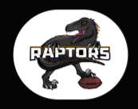
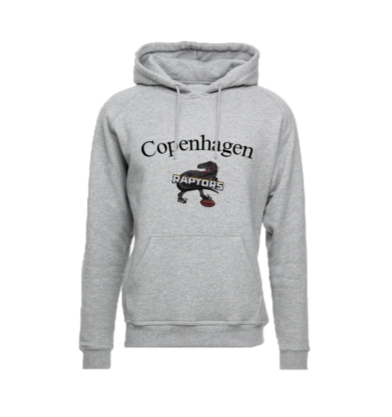

UX Design
Processen for dette forløb gik ud på at man selv skulle lave en hjemmeside i XD. Det hele skulle næsten fungere på samme måde som hvis det var lavet med HTML og CSS, men denne metode var en Prototype for at vise den virksomhed som har givet udtryk for hvordan deres hjemmeside skulle se ud. Det blev designet i XD for at der kunne laves ændringer nemt og hurtigt.
Moodboard



Style Tile

Prototype